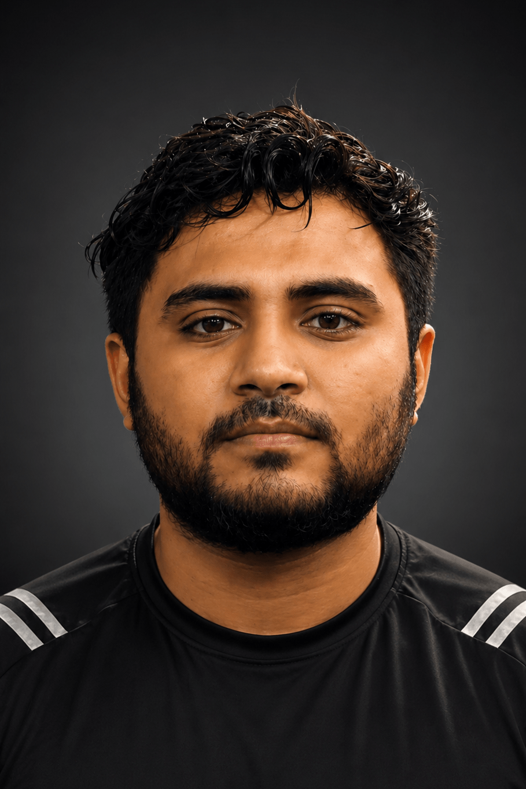
CHIRONJEET DAS JOY
I am an Electrical and Electronic Engineering graduate from BRAC University and a Research Assistant at LaSSET, advised by Abdulla Hil Kafi. My work spans robotics, autonomous systems, and nonlinear control, with current research focused on adaptive modular robotic systems and thrust-vectoring aerial vehicles.
Research Interests
My research interests lie in multi-robot and modular robotic systems, adaptive and geometric control, robotic manipulation, and perception-driven autonomy. I am particularly interested in systems whose morphology, dynamics, or interaction topology can change during operation, and in developing control and learning methods that remain robust under those changes. I also work with computer vision, sensor fusion, embedded systems, and machine learning for autonomous robotic platforms.
On-Going Work
This project investigates modular robotic systems that can autonomously reconfigure their physical morphology to suit different tasks and environments. I am developing identical five-degree-of-freedom robotic modules that combine actuation, sensing, computation, communication, and mechanical connection mechanisms. The system is designed to allow multiple modules to locate one another, align and connect through predefined docking interfaces, and assemble into task-specific structures for locomotion, manipulation, obstacle traversal, stability, and payload transport. In parallel, I am developing a reinforcement-learning and simulation pipeline for configuration-adaptive control, with the long-term goal of enabling control policies that remain effective as the robot's topology and dynamics change during operation.
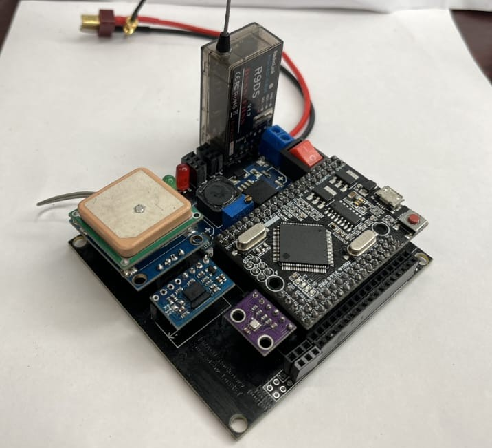
With Abdulla Hil Kafi
This work focuses on the control of a coaxial thrust-vectoring aerial vehicle using a reduced-attitude geometric control framework. The formulation explicitly incorporates the vehicle's actuator geometry and control-allocation structure instead of treating the propulsion system as an idealized force-and-torque source. The objective is to connect the geometric control law directly to the physical thrust-vectoring mechanism, enabling consistent mapping from commanded vehicle motion to feasible actuator inputs while accounting for the constraints and coupling introduced by the coaxial actuation architecture.
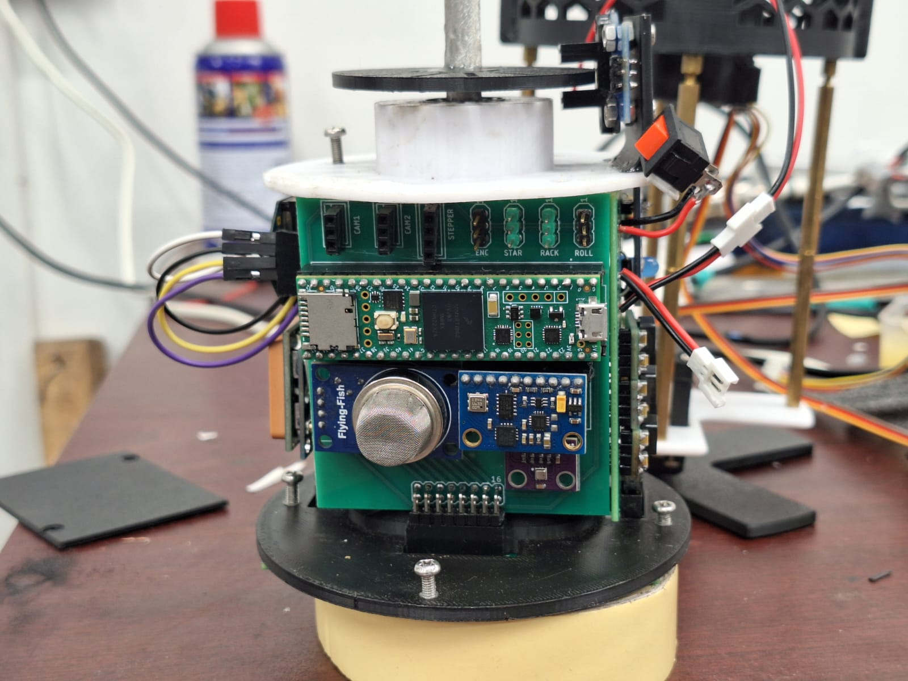
BRACU Diganta is a low-cost, modular CanSat education platform designed to provide hands-on training in aerospace and embedded systems engineering, particularly in resource-constrained academic environments. The satellite-in-a-can system integrates embedded processing, environmental sensing, power management, and wireless telemetry into a compact, reusable architecture that students can assemble and program. Emphasis on affordability, robustness, and ease of fabrication allows institutions with limited laboratory infrastructure to offer meaningful practical exposure to space systems. Supported by structured documentation and mission profiles, Diganta guides learners through system integration, flight testing, data acquisition, and analysis, bridging theoretical coursework with real-world engineering practice.
Capstone Project / FYDP
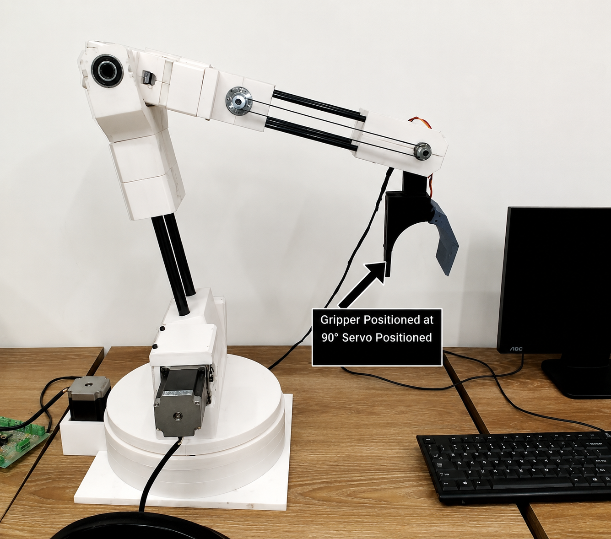
This project involves developing a fully autonomous, custom-built 7-degree-of-freedom robotic arm for pharmaceutical environments, designed and fabricated entirely on my own. It is intended for accurate shelving and retrieval of medication boxes using stereo vision and dexterous manipulation techniques, with a focus on affordability and ease of deployment. (Project Lead)
Publications
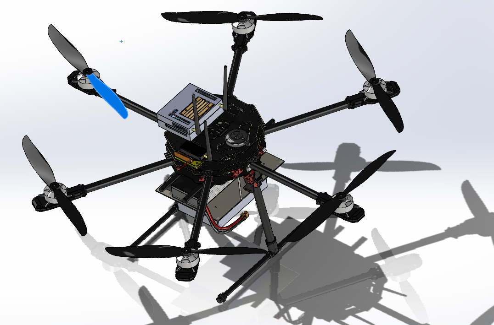
Chironjeet Das Joy, Abdulla Hil Kafi, Raihana Shams Islam Antara,
In Progress
This paper presents a neural network-based stabilization algorithm for hexa-copters in Mars-like wind conditions, addressing the limitations of PID controllers that struggle with dynamic winds, causing energy inefficiency. Using a supervised learning approach, the neural network adjusts motor thrust and rotor positions to enhance stability. Simulations with Dryden and Von Kármán turbulence models generate realistic Martian wind data, integrated into a Gazebo-ROS2 environment. Performance is evaluated on positional drift, tilt error, and power consumption. Results show that NN-based controllers improve stability, reduce energy use, and offer better performance in gusty winds compared to PID controllers, with potential for future Mars exploration.
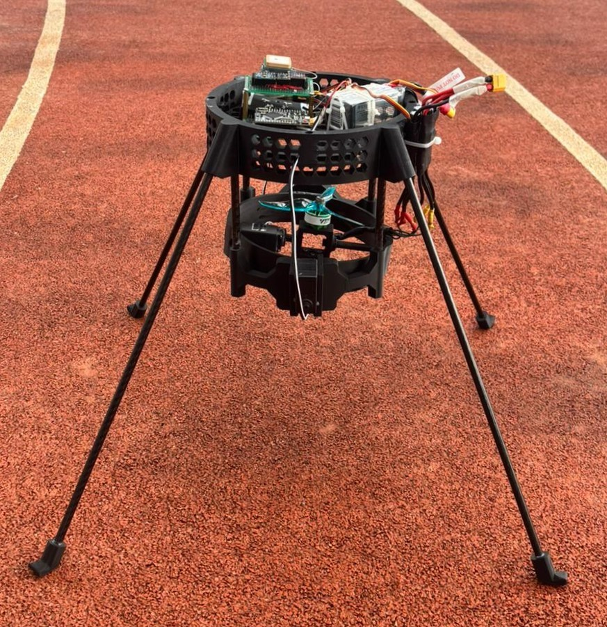
Chironjeet Das Joy, Mountashiour Rahman, Md Fuad Hasan, Muntaha Majed Chowdhury, Abdulla Hil Kafi,
IAC, 2025, Australia
This paper presents the design and experimental validation of a propeller-based thrust vector control (TVC) testbed for rocket and reusable launch system research. A cascaded PID control architecture is implemented to regulate position, attitude, and altitude, while sensor fusion using an Extended Kalman Filter (EKF) integrates IMU, barometer, and GPS data for accurate state estimation. The system employs contra-rotating BLDC motors with servo-driven gimbals to provide roll, pitch, and yaw authority. Comparative analysis of EKF, Mahony, and Madgwick filters shows that EKF offers superior robustness and long-term stability, particularly in yaw control. Experimental results demonstrate improved disturbance rejection, motion accuracy, and reliable stabilization for autonomous propulsion applications.
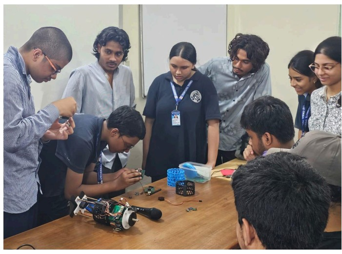
Muntaha Majed Chowdhury, Mountashiour Rahman, Mehzabin Mahmud, Kazi Abdur Rahim, Tanvir Ahmed Tonmoy, Anika Nawrinn, Chironjeet Das Joy, Raihana Shams Islam Antara, Abdulla Hil Kafi,
IAC, 2025, Australia
This paper presents BRACU Diganta, a low-cost and inclusive CanSat learning kit designed to introduce satellite systems engineering to introductory-level students in developing countries. The platform integrates mechanical, electronic, communication, software, and recovery subsystems using locally available, cost-effective components. A systems-engineering workflow was followed, including requirement analysis, preliminary and critical design reviews, and flight readiness validation. Beyond hardware, the program incorporates a structured instructional framework based on the ADDIE model and evaluates learning outcomes using Item Response Theory (IRT). Results from pilot workshops with school students show significant improvements in conceptual understanding and engagement. The work demonstrates that affordable, well-structured hands-on platforms can effectively bridge gaps in early space education.
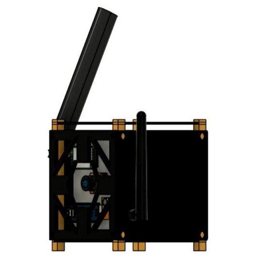
Nahid Ahmed Shihab, Chironjeet Das Joy, Mountashiour Rahman, Muntaha Majed Chowdhury, Prapty Majumder Golpa, Farhan Noor Showrov, Raihana Shams Islam Antara, Abdulla Hil Kafi,
IAC, 2025, Australia
This paper presents the design and development of a low-cost NanoSat Training Kit aimed at reducing barriers to space and satellite education in developing countries. The modular kit replicates key satellite subsystems including payload, electrical power system, onboard computer, communication, structure, and ground station, enabling hands-on learning across the full mission lifecycle. Developed through subsystem-level R&D and iterative integration, the project bridges theory and practice while remaining affordable and accessible. The initiative led to the creation of Dipto, a space-focused startup that combines technical innovation with entrepreneurship, outreach, and policy alignment. By supporting SDG 4 (Quality Education) and the IAF 3G Diversity Agenda, the work demonstrates how inclusive, low-cost educational platforms can strengthen local space ecosystems and workforce development.
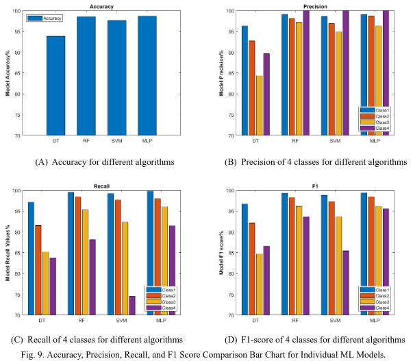
Tasfin Mahmud, Tayab Uddin Wara, Chironjeet Das Joy,
Heliyon, (Under Review)
This study examines factors contributing to malnutrition in under-five children using data from the MICS-2019 survey, employing Decision Tree, Random Forest, Support Vector Machine, and Multi-layer Perceptron (MLP) models. Random Forest and MLP showed excellent performance, with accuracies of 98.55% and 98.69%, respectively. Pearson correlation analysis revealed key factors like Weight for Age Z Score (WAZ2), Weight for Height Z Score (WHZ2), and breastfeeding status as significant contributors to malnutrition. The findings provide valuable insights into the classification and prediction of malnutrition stages.
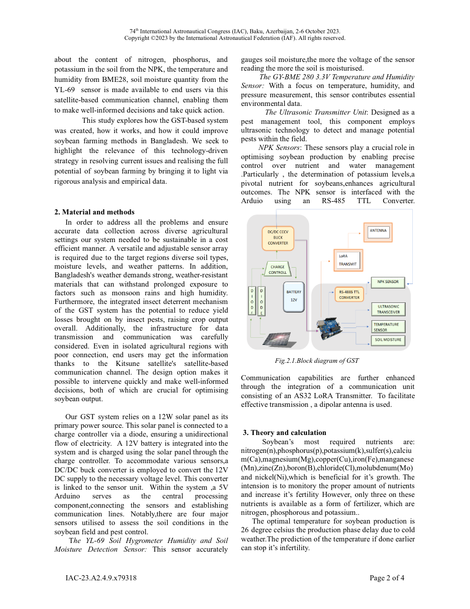
Abdulla Hil Kafi, Chironjeet Das Joy, Prapty Majumder Golpa, Raihana Shams Islam Antara,
IAC, 2023
Engineered and deployed a sophisticated time series data acquisition system for the Satellite Ground Sensory Terminal Project, leveraging an array of sensory inputs to facilitate remote monitoring of agricultural fields in rural locations through the KITSUNE Satellite. This system was meticulously designed to be compact and readily deployable, playing a pivotal role in the conceptualization and successful implementation of the project. (Lead system developer)
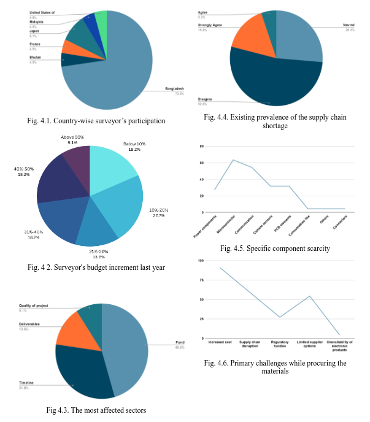
Chironjeet Das Joy, Raihana Shams Islam Antara, Abdulla Hil Kafi,
IAC, 2023
Global inflation rose from 4.7% in 2021 to 8.8% in 2022, driven by rising fuel prices and supply chain disruptions. Electronics manufacturers face material shortages and high costs, with no immediate relief despite central banks' efforts.
Selected Grad Course and Other Projects
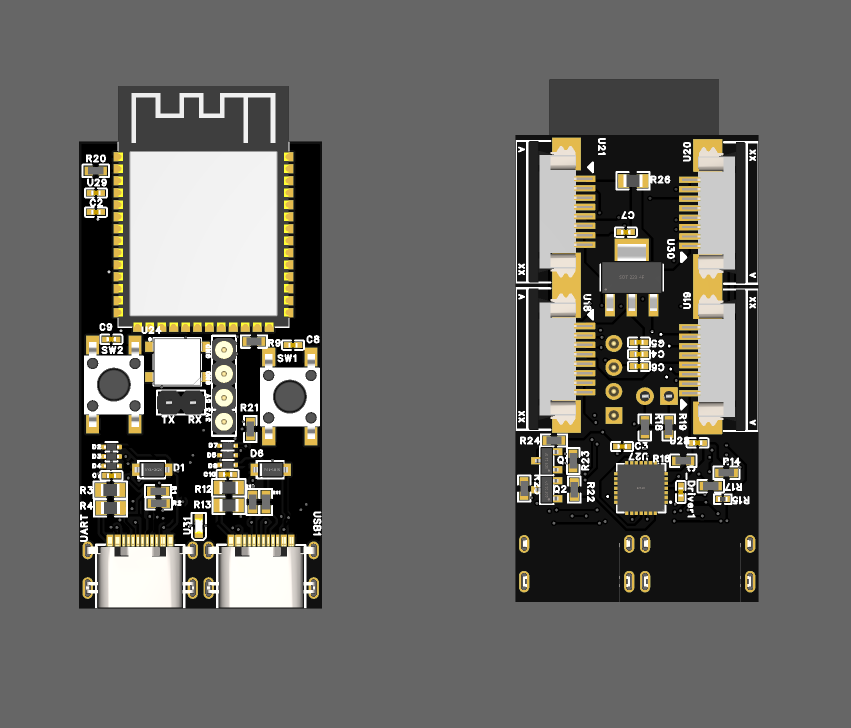
I designed the SwarmSync Controller Board, a key component for my project on Modular Robotic Swarm Assembly and Power-Shared Connectivity. This custom circuit integrates a Wi-Fi module, high-torque servo control, and dual power-sharing connectors to enable seamless communication, precise movement, and energy distribution among robotic modules. With onboard sensors, microcontrollers, and a robust docking mechanism, this board supports autonomous swarm behavior for dynamic structural formations and serves as an early hardware step toward scalable adaptive robotic systems.
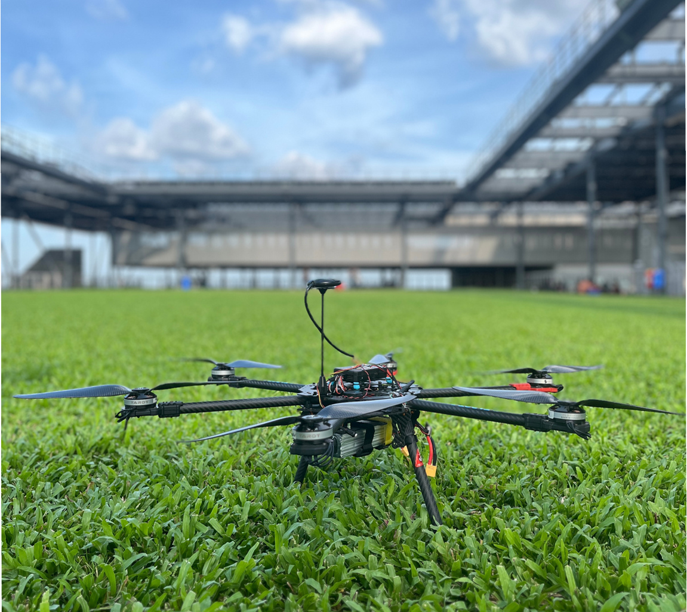
This project addresses challenges in stabilizing drones under complex aerodynamic conditions during rescue operations. It uses an IMU on the flight controller to determine the drone's position and is exploring a Neural Network approach for improved stabilization. A custom-built controlled environment with infrared tracking cameras is being created to simulate complex scenarios and compare the drone’s 3D position with IMU data. Additionally, a unique drone tracking system, designed and built from scratch without off-the-shelf products, is being developed for custom data collection. (Project Lead)
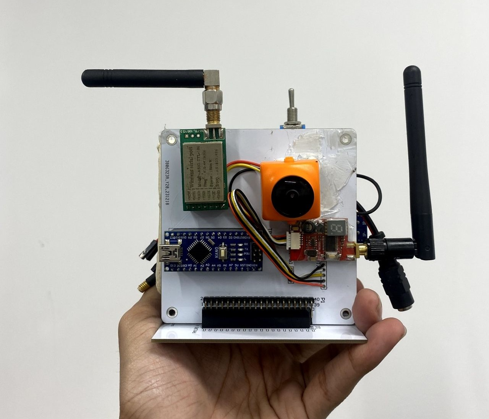
EEE383 Electronic System Design with Abdulla Hil Kafi
Partnered with five graduate students on a NANO Satellite project, focusing on data collection and transmission from multiple ground stations to a centralized control system. I was responsible for designing and implementing both the payload and communication subsystems.
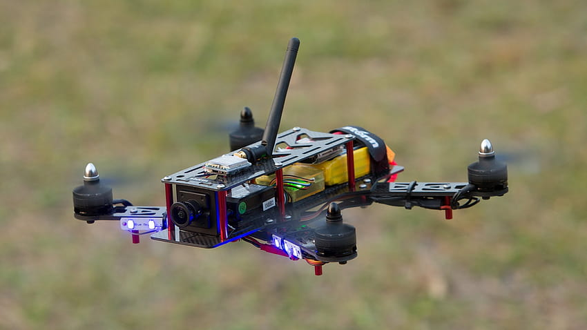
(Independent project)
Named after the Fourth Hokage's teleportation technique in "Naruto," the Flying Raijin is a custom-built 5-inch FPV drone engineered for exceptional speed, accelerating from 0 to 150 km/h in just 2 seconds, as verified by the onboard GPS module. The drone utilizes an STM32 F411 MCU and operates on a 16V system. It is equipped with a high-resolution camera, a low-latency video transmitter, and multiple onboard sensors, all of which enhance the system's overall performance and capabilities.